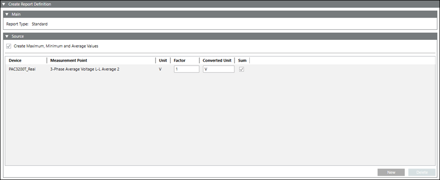

Create and Configure Report Definition
- Select Applications > Powermanager > Report Defintion.
- Click Create
 and select Create Report Definition.
and select Create Report Definition. - Select the desired report type.
- Perform the required configuration depending on the type of report.
- Click Save
 .
.
- The report definition is created and displays under the Report Definition folder in System Browser.
